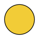

Kinesiske stjernetegn
Grisen
Optimistisk • Ærlig • Generøs
1959 • 1971 • 1983 • 1995 • 2007 • 2019 • 2031 • 2043
Rækkefølge
Position
Polaritet

Yin
Element
Vand
Lykkeblomst

Hortensia
Lykkefarve
Gul
Lykketal
Ni
Grisen er det tolvte kinesiske stjernetegn.
Personer født i grisens år er rolige, optimistiske og venlige
personer med et skarpt intellekt og stor generøsitet. De er ærlige
og engagerede, især når de ser mening med deres opgaver, men kan
også være overbærende, følelsesmæssigt skrøbelige og tilbøjelige
til at trække sig tilbage, hvis de føler sig såret. Deres barnlige
troværdighed og varme væsen gør dem vellidte, men deres tillid er
svær at genvinde, hvis den først er brudt.
Passer bedst med: Kanin, ged og tiger.
Passer mindst med: Slange og abe.
Rækkefølge
Position
Polaritet
Yin
Element
Vand
Lykkeblomst
Hortensia
Lykkefarve
Gul
Lykketal
Ni
Rækkefølge
Position
Polaritet
Yin
Element
Vand
Lykkeblomst
Hortensia
Lykkefarve
Gul
Lykketal
Ni
Personlighed
Personer født i grisens år er rolige og muntre, og er i stand til
at handle med omtanke. De besidder en usædvanlig uskyld og
optimisme, der får dem til at fremstå barnlig og troværdig. De er
kendte for deres afslappede væremåde, skarpe intellekt og venlige
sjæl. Når grisen finder et formål med en opgave, kan de bruge
samme entusiasme til at løse den med bravour.
Grisen er kendt for deres generøsitet, men hvis de føler sig
snydt, mister de hurtigt tillid, som er svær at genvinde.
Styrker
Grisen er ofte hyperfokuseret, optimistisk og ærlig, hvilket
skinner igennem i alt hvad de gør, også på dårlige dage.
Grisen vil gøre det bedste de kan i mange situationer, og ser
gerne efter at komme med gode resultater eller at vinde
konkurrencer. De er også kendt som generøse og godgørende for selv
deres værste fjender.
Svagheder
Grisen kan være overbærende over for sig selv og beskytte deres
ego ved at være passive. Deres medfølelse kan give dem
følelsesmæssig turbulens, og de tyr ofte til værste tænkelige
scenarie i tilfælde af kriser for at beskytte dem selv mod at
blive såret.
Til tider kan grisen være sjusket og doven, hvilket kan hæmme
deres præstationer i livet.